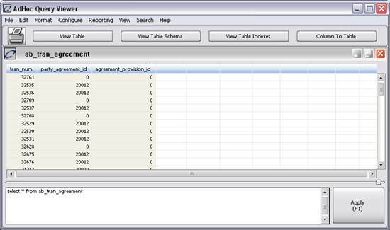

The Ad Hoc Query Viewer, a utility window for advanced technical users, allows system data or user data, stored in database tables, to be viewed (read-only). It also enables users to view the structure of those tables, including its key fields and indexes.
The following view options are flexible:
Notes:
1) Data elements that are stored in the BLOB format (Binary Large Objects) cannot be viewed in this window. In addition, this view is used for information purposes only; the underlying data cannot be modified.
2) Users are required to have security privilege 4001 in order to access the Ad Hoc Query window.
3) This is for Oracle Users only: To get double value results you have to introduce aliases for the resulting columns within your sql queries. The alias has to start with "ohd_". As an example you should use the query "select sum(rate) ohd_sum from profile" instead of "select sum(rate) from profile" to get the respective double result.
4) This window has a limit of 32,500 rows for versions prior to v8.0r2. In versions v8.0r2 and greater, the limit has been raised to 500,000 rows.
There are two ways to access this window:
Or:
Either method displays the following window:

This window contains the following menu items:
Menu |
Item |
Description |
File |
New |
Clears any query from the list box at the bottom of the window and allows a new query to be entered. |
|
Save Configuration |
Saves the current table configuration. |
|
Load Configuration |
Loads the saved table configuration. |
|
Save AdHoc Query |
Saves your SQL Query so that you can retrieve and use it later. |
|
Save Public AdHoc Query |
Saves an SQL Query so that you and others can retrieve it and use it later. |
|
Load AdHoc Query |
Loads an existing query. A pick list of existing queries displays. |
|
Delete AdHoc Query |
Deletes the selected query from the database. |
|
Prints the current window. |
|
|
Copy Window |
Displays a second Table Viewer window with the same table contents. |
|
Export to Text File |
Exports table contents to a file in comma-separated format. |
|
Export to XML File |
Exports table content to a file in XML format. |
|
Import from XML File |
Imports an XML file to a system table. |
|
Exit |
Closes the window. |
Edit |
Copy |
Copies highlighted rows to the Window clipboard. The rows can then be pasted into another Window application. |
|
Select All |
This option allows you to select all fields in this window. |
|
Max Rows |
A pop-up window displays to allow the definition of the maximum number of rows for this table. This option was removed in V6.0 and up. |
|
Edit Table |
Opens the displayed table for editing. |
Format |
Toggle Formatting |
This option changes the format in the fields of the window. You can either view the actual data in the field, or switch to the alias that has been assigned to that data value. For example, Law Type uses the alias New York State. This may be assigned to the number 1, and the alias New Jersey State might be assigned to the number 2. If the numerical value displays, the toggle option changes the data to display using the aliases. Selecting it again will return the fields to displaying numbers. Toggles between whether the viewer applies the formatting defined in configuration to format the data in each column. Equivalent to F4. |
|
Auto Size |
Adjust the width of each column to fit the data. Equivalent to F2. |
|
Toggle Row Header |
This turns the Row Header on and off. This is not currently functional. |
|
Default Formatting |
Apply the system default formatting. Equivalent to F9. |
Configure |
This option displays the Configure View window. |
|
Reporting |
Script à Run Script |
Runs a saved plug-in/script passing the selected columns in table format to the selected plug-in/script. The table is passed as argt to the selected plug-in/script. |
|
Script à Run Task |
Runs a saved task passing the selected columns in table format to the selected plug-in/script. The table is passed as argt to the selected plug-in/script. |
|
Crystal à Active Data |
A list of available Crystal Active Data reports to be exported displays for selection. |
|
Crystal à Export to Xsd (Export to Ttx - V18 and below) |
Export a file containing the format of the table. For the use of Crystal reports. |
|
Publish |
Publishes the contents of the table to a properly configured Excel Spreadsheet. |
|
Displays the Pivot Table Setup window. |
|
|
MS Excel |
Opens the Excel Interface window. This allows the user to export data displayed in the viewer to a new, open, or existing Excel workbook. |
View |
All Rows |
|
|
Sum Rows |
Shows only the sum rows in the table. |
|
Data Rows |
Displays only the data rows within the table. |
|
Show Table Info |
This option displays a pop-up window with information on the fields of the table, including current date and time, number of columns, and number of rows. |
Search |
Find <F3> |
Displays the Search window. |
Help |
Help |
Displays information about this window. |
This window contains the following buttons:
Button |
Description |
Performs the same function as File à Print. |
|
View Table |
Displays the Table View in the list box at the top of the window. The user clicks this button and displays a complete pick list of all tables stored in the System, from which the user can choose one to be displayed. Note: In 7.0r1 and up, selecting a table from this button will populate the bottom text entry area with an expression of the form: select * from [table_name] So if the table is “portfolio”, it would say: select * from portfolio |
View Table Schema |
|
View Table Indexes |
Displays the Table Indexes View in the list box at the top of the window. The user clicks this button and displays a complete pick list of all table indexes stored in the System, from which the user can choose one to be displayed. |
Column To Table |
Displays the Column to Table View in the list box at the top of the window. This is a configurable pick list with which the user can create pivot tables from an individual column in a table. For more about using this feature, see below. |
Apply (F1) |
Different views display different column names.
At the bottom of the window is the SQL Entry Panel (the panel next to the <Apply (F1)> button). You can type SQL statements (queries) into this panel as straight text and execute them. For example, if you wish to display all Toolsets in the Toolset table with names beginning with the letter M, type the following commands into the SQL Entry Panel:
Press the <Apply (F1)> button. If there are syntactical problems with the query text, an error message generates requesting you retype the SQL string. If there are no problems, all data meeting the specified criteria returns in the Table View format. You can save this text as a stored query by selecting File à Save Ad Hoc Query. The query is saved in the default location.
You can load saved queries by selecting File à Load Ad hoc Query. A pick list displays with the previously saved queries. Select one. The text of that query displays in SQL ENTRY PANEL. The query is executed by pressing <Apply (F2)>.
You can delete saved queries by selecting File àDelete Ad Hoc Query. A pick list displays with the previously saved queries. Select one. A confirmation window displays. Click OK to delete the selected query.
You can highlight text in the sql edit field, and execute only that text. This allows the user to create multiple SQL statements in the table viewer, highlight only the sql they want to execute, and press the <Apply> button or <F1> key. The system knows that text has been highlighted and read only that text.
Warning: Although this tool will take standard SQL, there are some things to keep in mind
1) SQL varies slightly between database servers. There are potentially different reserved words, date may be handled differently and so on.
2) This tool will only allow for select statements. You can not modify the database using this tool. Words like "update" are not allowed. If you need to query for a field in the database, such as ab_tran.last_update, be sure that it is not followed by a space or it won't work.
For example:
Won't Work: select * from ab_tran where last_update > '9-Mar-2002'
Will Work: select * from ab_tran where last_update> '9-Mar-2002'
Follow these steps to activate the Ad Hoc Query Viewer window and display table data:
Note: If you know the table name, you can type its first few letters. A shorter, filtered table list displays from which to make your selection.
Note: If you minimize the current Table View, the other(s) can be viewed. You can minimize all Table Views within the Ad Hoc Query window and switch between them.